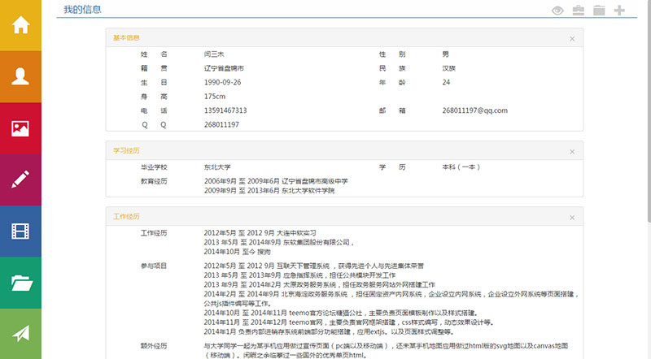
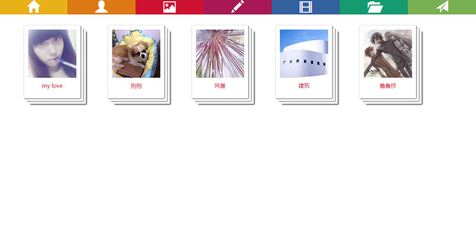
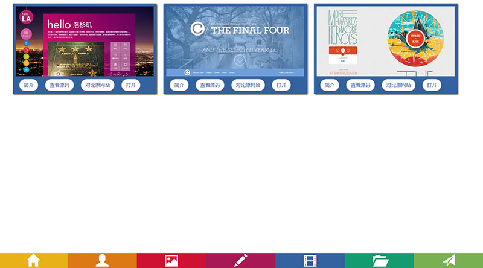

做一个略调皮的个人主页--菜单篇

由于要重新找工作，所以做了一个自己的个人主页，觉得还好，所以分享出来，也算是自己的一些记录。
具体演示可以查看我的个人主页。
大体都是一些css3的应用，干货实在很少，做来玩乐罢了。
第一次写这方面的文章，行散神也散，望海涵。
首先，先列出less文件的公共部分以及常量。
公共类：
/*居中*/
.getCenter (@x, @y) {left:50%; right:50%; top:50%; bottom:50%; margin-left:- @x/2; margin-top: - @y/2;}
/*圆角*/
.getBorderRadius (@m) {
border-radius:@m;
-webkit-border-radius:@m;
-moz-border-radius:@m;
-ms-border-radius:@m;
}
/*过渡*/
.geTtransition (@transition) {
-webkit-transition:@transition;
-moz-transition:@transition;
-o-transition:@transition;
-ms-transition:@transition;
transition:@transition;
}
/*形变*/
.getTransform (@transform) {
-webkit-transform:@transform;
-moz-transform:@transform;
-o-transform:@transform;
-ms-transform:@transform;
transform:@transform;
}
/* 阴影 */
.getBoxShdow (@boxshdow){
-webkit-box-shadow:@boxshdow;
-moz-box-shadow:@boxshdow;
-o-box-shadow:@boxshdow;
-ms-box-shadow:@boxshdow;
box-shadow:@boxshdow;
}
/*动画*/
.getAnimate (@animate) {
animation: @animate;
-moz-animation: @animate;
-webkit-animation: @animate;
-ms-animation: @animate;
-o-animation: @animate;
}
.getTransform (@transform) {
-webkit-transform:@transform;
-moz-transform:@transform;
-o-transform:@transform;
-ms-transform:@transform;
transform:@transform;
}
/*形变*/
.getTransformOrgin (@transform) {
-webkit-transform-origin:@transform;
-moz-transform-origin:@transform;
-o-transform-origin:@transform;
-ms-transform-origin:@transform;
transform-origin:@transform;
}
/* 梯度渐变 */
.getGradient(@type, @color1, @color2) {
background:-moz-linear-gradient(@type, @color1, @color2);/*Mozilla*/
background:-webkit-linear-gradient(@type, @color1, @color2);/*new gradient for Webkit*/
background:-o-linear-gradient(@type, @color1, @color2); /*Opera11*/
background:-ms-linear-gradient(@type, @color1, @color2); /*Ie 11+*/
filter: progid:DXImageTransform.Microsoft.gradient(startcolorstr= @color1,endcolorstr= @color2,gradientType=0); /*Ie 10-*/
}
常量：
@color1:#E8B118; //菜单颜色
@color2:#DC7913; //菜单颜色
@color3:#CE1131; //菜单颜色
@color4:#A71955; //菜单颜色
@color5:#33619F; //菜单颜色
@color6:#149B70; //菜单颜色
@color7:#79B053; //菜单颜色
@animateTime : 300ms; //动画时间
@delay : 50ms; //延时时间
然后先把html的代码写出来，总共是7个菜单的标签，以及5个区域的标签。
整个页面的展现形式最终会有五种，分别为 normal left right left right。
<ul class="indexMenu">
<li data-type="normal"><span class="glyphicon glyphicon-home" ></span><em class=" rel">我的主页</em></li>
<li data-type="left"><span class="glyphicon glyphicon-user " ></span><em class=" rel">我的信息</em></li>
<li data-type="top"><span class="glyphicon glyphicon-picture "></span><em class=" rel">我的相册</em></li>
<li data-type="right"><span class="glyphicon glyphicon-pencil "></span><em class=" rel">我的随笔</em></li>
<li data-type="bottom"><span class="glyphicon glyphicon-film "></span><em class=" rel">我的临摹网站</em></li>
<li data-type="left"><span class="glyphicon glyphicon-folder-open "></span><em class=" rel">我的工作经历</em></li>
<li data-type="right"><span class="glyphicon glyphicon-send "></span><em class=" rel">我的游戏</em></li>
</ul>
<section class="area_main abs ovh"></section>
<section class="area_right abs"></section>
<section class="area_left abs"></section>
<section class="area_top abs"></section>
<section class="area_bottom abs"></section>
用到了一些boot的glyphicon标签。大体的结构差不多就是这些代码就够了，下面我们来构建第一个页面。
首先是7个标签的css样式：
.indexMenu{
display:block; width:100%;height:100%; z-index:5;position:absolute;top:0px;left:0px;
.geTtransition(all @animateTime ease);
li {
width:100%;height:14.285%;color:#FFF; cursor:pointer;position:relative;left:0px;top:0px;
em{
line-height:36px;font-size:18px;top:50%;margin-top:-18px;float:right;
.geTtransition(all @animateTime ease );
}
span {
font-size:36px;top:50%;margin-top:-18px;display:block;width:90px !important;text-align:center; float:right;
.geTtransition(all @animateTime ease );
}
}
li:hover{padding-right:40px;}
li:nth-child(1){background:@color1; }
li:nth-child(1):hover{background:lighten(@color1,10%)}
li:nth-child(2){background:@color2;}
li:nth-child(2):hover{background:lighten(@color2,10%);}
li:nth-child(3){background:@color3;}
li:nth-child(3):hover{background:lighten(@color3,10%);}
li:nth-child(4){background:@color4;}
li:nth-child(4):hover{background:lighten(@color4,10%);}
li:nth-child(5){background:@color5;}
li:nth-child(5):hover{background:lighten(@color5,10%);}
li:nth-child(6){background:@color6;}
li:nth-child(6):hover{background:lighten(@color6,10%);}
li:nth-child(7){background:@color7;}
li:nth-child(7):hover{background:lighten(@color7,10%);}
}
然后是所有详细区域的样式：
section{
width:100%;height:100%; background:#FFF; overflow:hidden;.geTtransition(all @animateTime ease);
}
area_main的样式：
.area_main{
top:0px;left:-100%;padding-left:400px;z-index:6;
.getBorderRadius(350px);
.geTtransition(all @animateTime ease @animateTime);
}
注意现在的main_area 区域是隐藏在左侧的，由于是有五种形态，但是操作的都是这些标签，所以我把形态的标识放在了body上，比如normal就是
所以css的样式还有这么一句：
.type_normal{
.main_area{left:-400px;}
}
这样整个第一种形态就差不多了。之后我们需要做的就是切换形态。我把形态的信息用data-type的形式写在了li标签里，这样如果想改的话也很方便。每次切换形态简单说来就是改变body的class。这样就会改变css样式，我们加了过渡和形变的样式就会呈现动画效果。这里我们应用js控制：
/* 主页菜单点击后跳转效果 */
var menuClickType = {
'normal' : function () {}
,'left' : function () {}
,'top' : function () {}
,'right' : function () {}
,'bottom' : function () {}
}
var $menus = $('.indexMenu li');
$menus
/* 主页菜单点击动作 */
.click(function () {
var $this = $(this), type = $this.data('type');//获取type 展现形态标识
menuClickType[type](); //调取相应的方法
});
这样基本的框架就搭好啦，开始做left的方法，首先我们先看一下left形态的效果：

然后是left形态的跳转效果方法：
css样式：
type_left{
.indexMenu{
li:hover{
padding-right:0px;
margin-left:150px;
}
}
.area_main{
.geTtransition(all @animateTime ease);
}
.area_left{opacity:1;z-index:auto;}
}
js代码：
$body.removeClass().addClass('type_left');
$menus.css({
'left':'-'+ (bodyWidth - 90) +'px'
,'top' : '0px'
,'height' : bodyHeight/7 + 'px'
});
这里解释一下，由于有很多东西不能单凭css去控制，也需要js辅助区控制。控制的主要属性为top，left 以及 height，top的控制是以后要用，这里的从normal 转换到left 形态，只是改变了left的值，至于height属性，是由于以后展现的要求，我把菜单的ul的高设成了0。这样它才不会阻挡住屏幕，而其中li的高度自然就需要手动的去加上去。
然后在type_left的css中，加入菜单的hover效果（和normal下是不一样的）。以及main和left区域的效果，这里我们需要把area_left区域展现出来，并且把.area_main区域收起，由于已经去掉了body上 type_normal 的样式，所以area_main区域就自动的缩回左边去了。
最后在加上菜单有顺序的向左移动，好像波浪一样的效果，主要是css3的过渡代码：
li:nth-child(1){background:@color1; .geTtransition2(all @animateTime ease, left @animateTime ease @delay * 1)}
li:nth-child(1):hover{background:lighten(@color1,10%)}
li:nth-child(2){background:@color2; .geTtransition2(all @animateTime ease, left @animateTime ease @delay * 2)}
li:nth-child(2):hover{background:lighten(@color2,10%);}
li:nth-child(3){background:@color3; .geTtransition2(all @animateTime ease, left @animateTime ease @delay * 3)}
li:nth-child(3):hover{background:lighten(@color3,10%);}
li:nth-child(4){background:@color4; .geTtransition2(all @animateTime ease, left @animateTime ease @delay * 4)}
li:nth-child(4):hover{background:lighten(@color4,10%);}
li:nth-child(5){background:@color5; .geTtransition2(all @animateTime ease, left @animateTime ease @delay * 5)}
li:nth-child(5):hover{background:lighten(@color5,10%);}
li:nth-child(6){background:@color6; .geTtransition2(all @animateTime ease, left @animateTime ease @delay * 6)}
li:nth-child(6):hover{background:lighten(@color6,10%);}
li:nth-child(7){background:@color7; .geTtransition2(all @animateTime ease, left @animateTime ease @delay * 7)}
li:nth-child(7):hover{background:lighten(@color7,10%);}
把之前的li标签的css样式增加一些东西，这里就是增加了过渡，给left属性的过渡增加延时，标签index越大，延时就越多，这样就可以做出主页中的动画效果啦。
animateTime 和 delay 都是上面设置的常量。
当然我们还要从left能回到 normal 形态上。所以 normal的js代码是：
$body.removeClass().addClass('type_normal');
$menus.css({
'left':'0px'
,'top' : '0px'
,'height' : bodyHeight/7 + 'px'
});
这样，从normal 形态 到left 形态的效果就做好了。就是演示中第一个按钮我的主页以及第二个按钮我的信息的点击效果。
之后来看第三个形态——right形态的效果：

这个菜单是没有动的，只是相对应的区域（section）从左侧滑了出来，所以这个是很好做的。
css样式：
.area_right{
z-index:6;overflow:hidden;top:0px;left:-100%;padding-left:90px;
}
.type_right{
.indexMenu{
li{left:0px;}
}
.area_main{
.geTtransition(all @animateTime ease);
}
.area_right{
left:-90px;
.geTtransition(all @animateTime ease @animateTime);
}
.indexMenu{
li:hover{
padding-right:0px;
span{
.getAnimate(animate_menu @animateTime ease);
}
}
}
}
js代码：
$body.removeClass().addClass('type_right' );
$menus.css({
'left':'0px'
,'top' : '0px'
,'height' : bodyHeight/7 + 'px'
});
值得注意的一点事，这三种形态的css代码中，都有area_main的样式，但是只有一句过渡的，不同的地方时有的有延时，有的没有，这个是考虑normal形态和right形态切换的时候，其实就area_main向左收回，area_right向右展开，如果同时进行，很不友好，所以呢，就加了这个延时。具体的逻辑大家试一下就知道啦。
然后是top和bottom。这两个其实是一回事，只不过一个在上一个在下，只挑一个top说一下即可。
top形态：
 
这个是把整个菜单标签的结构都给换了，以前是 width:100%; height:100%/7。 现在是 反过来了，所以每次做变化之前，都需要把标签全部移动到上方（或者下方）的屏幕外，然后做变化，再显示出来。具体动画效果请参考演示。
具体的cssy样式：
.type_top_end{
.indexMenu{
height:100%;
top:-100%;
}
.main_area{
.geTtransition(all @animateTime ease);
}
}
.type_top{
.indexMenu{
height:100%;
top:-100%;
li {
height:100% !important;width:14.285%;float:left;left:0px;overflow:hidden;
.geTtransition3(all 0s ease, top @animateTime ease, background @animateTime ease);
em{
position:absolute;bottom:5px;top:auto;width:100%;text-align:center;opacity:0;
.getTransform(scale(2));
}
span {
top:100%;margin-top:-40px;float:none;left:50%;margin-left:-45px;.getTransform(scale(1));
}
}
li:hover{
padding-right:0px;
span{
opacity:0;
.getTransform(scale(2));
}
em{
opacity:1;
.getTransform(scale(1));
}
}
}
.area_top{opacity:1;z-index:auto;}
}
这里有两个css样式，type_top_end是最终的显示结果，type_top可以当做是变形的过程，这个设计有一些蹩脚，当时没有设计好。
js代码：
$body.removeClass().addClass('type_top_end' );
$menus.css({
'left':'0px'
,'top' : '0px'
});
setTimeout(function () {
$body.addClass('type_top' );
$menus.css({
'left':'0px'
,'top' : '43px'
});
} , animateTime);
先收到最上面去，然后setTImeout中 改变top的值，让其在下来一部分。组成所见的标签。
这样，基本的效果就出现了，不过还是有一点的欠缺，具体说来：
第一，从top或者bottom效果便到别的效果时，动画显的很混乱；
第二，从top效果换到bottom效果时，也很乱；
第三，由于只有五种展现形式，不过内容却有七个，所以left和right是重复的两个，那么当从一个left跳转到另一个left（如演示中第二个标签——我的信息跳转到第六个标签——我的工作经历）时，也需要重新设定动画。
为了解决这三个问题，我们先做一个限定，再次点击同一个标签，是要屏蔽掉的。代码如下：
$menus
/* 主页菜单点击动作 */
.click(function () {
var $this = $(this), type = $this.data('type'), target = $this.data('target')
, $area = $('.area_'+ type),flag = $area.data('flag') ? $area.data('flag') : '';
if($body.hasClass('type_'+ type) && flag == target) return;
menuClickType[type](); //调取相应的方法
});
这个屏蔽有两个判断，第二个判断是加内容时候需要的，我们现在只看第一个即可。
其次是解决第一个问题，即对top以及bottom形态的修正。我们写一个方法：
* type_top type_bottom 修正 */
function amend_top_bottom () {
if($body.hasClass('type_top') || $body.hasClass('type_bottom')){
$menus.css({
'left':'0px'
,'top' : '0px'
});
return animateTime;
}
return 0;
}
然后在别的click点击事件中，调用这个方法，获取一个数值，即延时，然后把之后的执行放到一个setTimeOut里，延时即这个数值。当点击时当前的形态不是top或bottom时，返回0，即马上运行，当是这两种形态时，即先把露出的菜单缩会，然后给一个animateTime的延时，这段延时后在走点击事件的方法，即可。
第二个问题。只要在top 和bottom 的点击事件中 加一下是否当前形态为彼此的另一个即可，代码为：
if($body.hasClass('type_bottom')){
$body.addClass('type_top' ).addClass('type_top_end').removeClass('type_bottom').removeClass('type_bottom_end');
$menus.css({
'left':'0px'
,'top' : '43px'
});
else {
/*之前点击事件的代码*/
}
效果可参考从第三个菜单——我的相册点击到第五个菜单——我的临摹网站的效果。
最后一个问题。就需要在left和right的方法中加入本身的判断啦。具体代码为：
var time = amend_top_bottom();
if($body.hasClass('type_right')){
time = animateTime;
$body.removeClass();
}
setTimeout (function () {
$body.removeClass().addClass('type_right' );
$menus.css({
'left':'0px'
,'top' : '0px'
,'height' : bodyHeight/7 + 'px'
});
}, time);
简单说，就是在removeClass 和addClass之间加一个延时，即可。
这样就达到了大体的效果。不过由于我的特定需求，让代码写的有些随意，不是很好。如果规范一点，每次点击事件都需要判断这样几件事，即：
1：是否是重复点击。
2：如果是重复点击，内容是否变动（5个形态，7个内容）,如果改变，则需要添加从本身变本身的动画。
3：特殊前提（如是否是从top或bottom下变换过来等）。